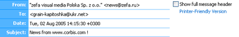
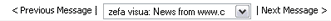
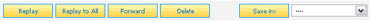
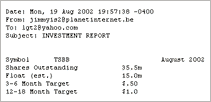
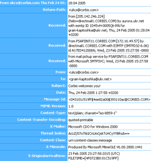

The Read Message page displays all information, including the header, body, and attachments, for a specific email message. Common tasks include:
Navigating the Read Message Page
Put simply, the Read Message page displays the entire contents of an email and offers options for handling the message once it has been read. An email
is composed of the message header, attachments (if any), and the message itself.

By default, message headers are displayed in their simplest form. This typically includes listing the sender, the recipient(s), date, subject, as well
as links to any attachments. Viewing the full message header is also an option. Below the header is the body of the message. By default,
any linked text or images found in your message are automatically hyperlinked.
In addition, any attachments that are viewable inside a browser, such as popular image formats (.gif, .jpg, etc.), html formatted documents, and more, are
automatically displayed as part of the message body. This option can be disabled from the Account Info page.

It is not necessary to step back to the folder view to load another message. Locate the navigation options above and below the email message and use it to step
forward to the next message, step back to the previous message, or even select a message from the dropdown selection box. This dropdown box allows you to
quickly skip to any of the five next or previous emails that surround the message currently being viewed.
Replying or Forwarding Messages
Clicking the "Reply", "Reply to All", and "Forward" buttons direct you to the Compose Message page. By default, the message is
"quoted" on the composition page. Automatically quoting messages can be disabled on the Account Info page.

Clicking "Reply" starts a composition addressed to the original sender of the message only. Clicking "Reply to All" starts a composition addressed to all email
addresses found in the "To" and "Bcc" fields of the original message. Clicking "Forward" starts a composition with the "To" field remaining blank.
Saving a Message
Save or move a message to a different folder by selecting one from the dropdown and clicking the "Save In:" button. A new folder can be added immediately
by selecting the "Add New Folder" option from the dropdown or by adding a folder through the Folder Manager
Users may also save or move more than one message at a time from the Inbox & Folder pages.
Deleting a Message
Clicking the "Delete" button immediately deletes the current message. It can also be sent to the "Trash" folder for final deletion later if the option is enabled
on the Account Info page.
Users may also delete more than one message at a time from the Inbox & Folder pages.
Adding the Sender or Recipient to the Addressbook
Users may quickly add new contacts to their Addressbook by locating any hyperlinked email addresses in the message header
and clicking on them. The username of the email address is also automatically dropped into the contact as the nickname.
Viewing a Printer-Friendly Version
For printing purposes, EMU Webmail offers a simple, alternative format for viewing email messages.

Clicking the "Printer-Friendly Version" link from the message header launches a new window that includes the header information and message only. Users may then
click the "Print" button is their browser to generate a hard copy of the message that requires little ink.
Message headers are often large and contain information not particularly relevant to the simple reading of an email message. Full headers are disabled by
default but may be shown by checking the checkbox labeled "Show full message header". Checking this box again switches back to the normal header.

Full message headers may be viewed on a per-message basis or may be set as the default view via the Account Info page.
Viewing the full headers also works in conjunction with the Printer-Friendly viewing of messages.